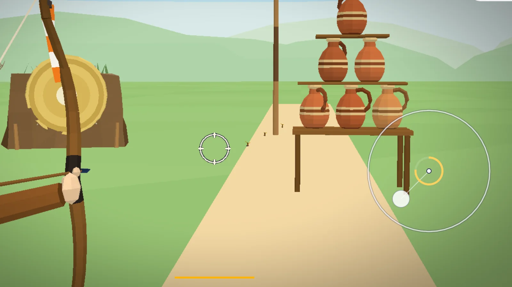
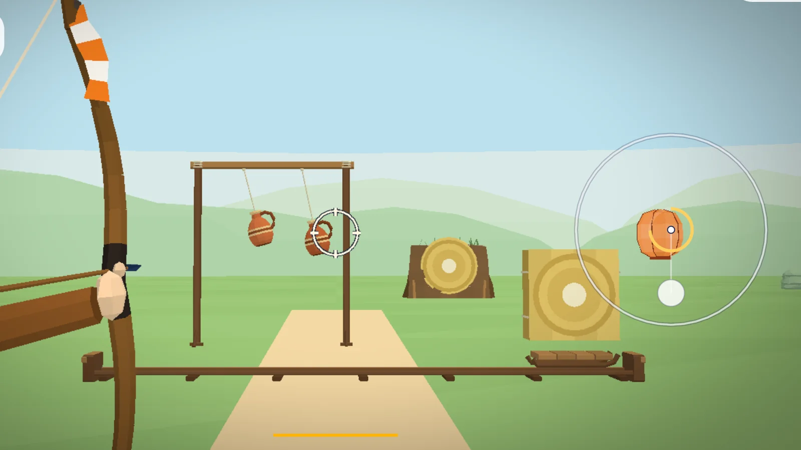

Türk okçuluğu ve Ok Meydanı
Türk okçuluğu yüzyıllar boyunca hem savaşın hem sporun hem de ustalık geleneğinin parçası oldu. Bu sayfada geleneğin kısa bir özeti, İstanbul'daki Okmeydanı ve Bil At!'ın Ok Meydanı modu var.

Kemankeşlik: Osmanlı'da okçuluk
Kemankeşlik, Osmanlı'da yapılan okçuluğa verilen addır. Hem spor hem gelenek hem de savaş becerisi olarak yaşadı. Okçuluk yapana kemankeş denir.
Türk okçuluğunun kökleri çok eskiye uzanır. Atlı okçuluk, Orta Asya'dan Anadolu'ya uzanan geleneğin önemli bir parçasıdır.
Geleneksel yay
Geleneksel Türk yayı bileşik yaydır. Ahşap, hayvan boynuzu ve kirişten yapılır; katmanlar hayvansal tutkalla birleştirilir. Ok gövdesi için çam ya da bambu, tüy için kartal ya da kuğu tüyü kullanılırdı.
İstanbul'da Okmeydanı
Fatih Sultan Mehmed, İstanbul'un fethinden sonra Okmeydanı'nı okçulara ayırdı. Semt adını buradan alır.
Okmeydanı'nda iki ana atış türü vardı:
- Puta atışı: Hedefe atış. Okçu belirli bir hedefi vurmaya çalışır.
- Menzil atışı: En uzağa atış. Okçular okunu olabildiğince uzağa gönderirdi.
Rekor bir mesafeye ok düştüğünde, düştüğü yere menzil taşı dikilirdi. Taşın üzerindeki kitabede okçunun adı ve atışı anlatılırdı. Kaynaklar kayıtlı 132 ok âbidesinden 55'inin bugün ayakta olduğunu yazar.

Okçular Tekkesi de Okmeydanı'nın parçasıydı. Tekke bugün yok, ancak minaresi ayakta.
Bugün
Geleneksel Türk okçuluğu 2019'da UNESCO'nun Somut Olmayan Kültürel Miras Temsili Listesi'ne girdi. Liste; okçuluk disiplinlerini, atış tekniklerini ve geleneksel ekipmanın ustalığını kapsıyor.
Bil At!'ta Ok Meydanı
Bil At!'ın 3D okçuluk modu bu geleneğe selam durur. Adı bu geleneği hatırlatır. Oyunda da hedefe atış var.
- Üç tur: sabit, sallanan ve uçan hedefler.
- Testi kulesi, kabak ve puta hedefleri.
- Rüzgâr yaydaki püskülden okunur.
- Yay tam gerilince nefesin zamanı yavaşlatır.
- Okçuluk Yolu'nda isabetlerin seni Hevesli'den Efsane'ye taşır.

Oyun ücretsiz, Ok Meydanı internetsiz oynanır. Oyunun bilgi yarışması tarafı için Türkçe bilgi yarışması ve okçuluk oyunu sayfasına bak.